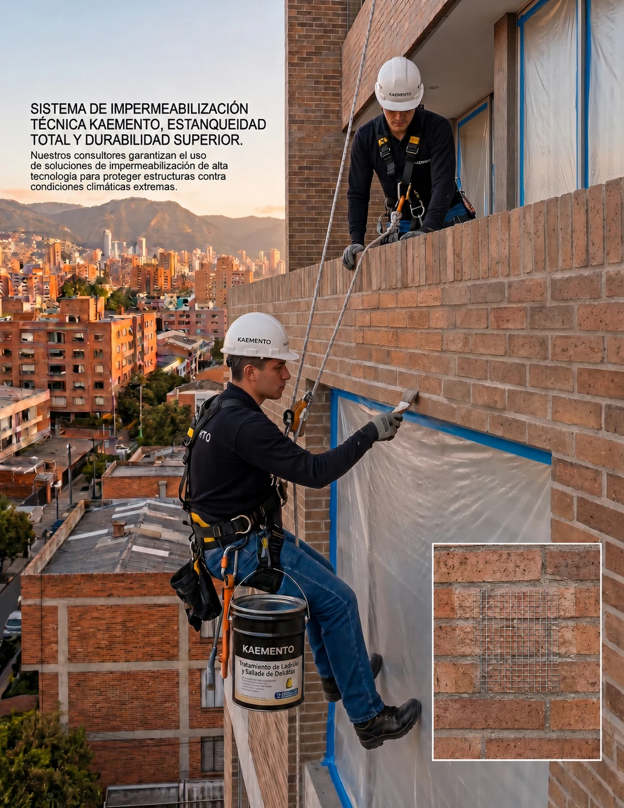
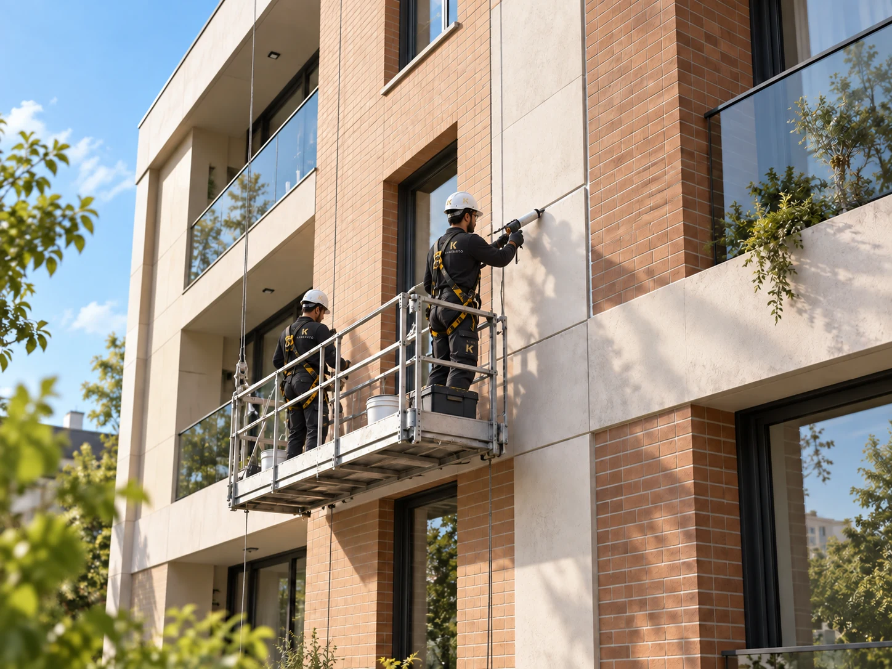
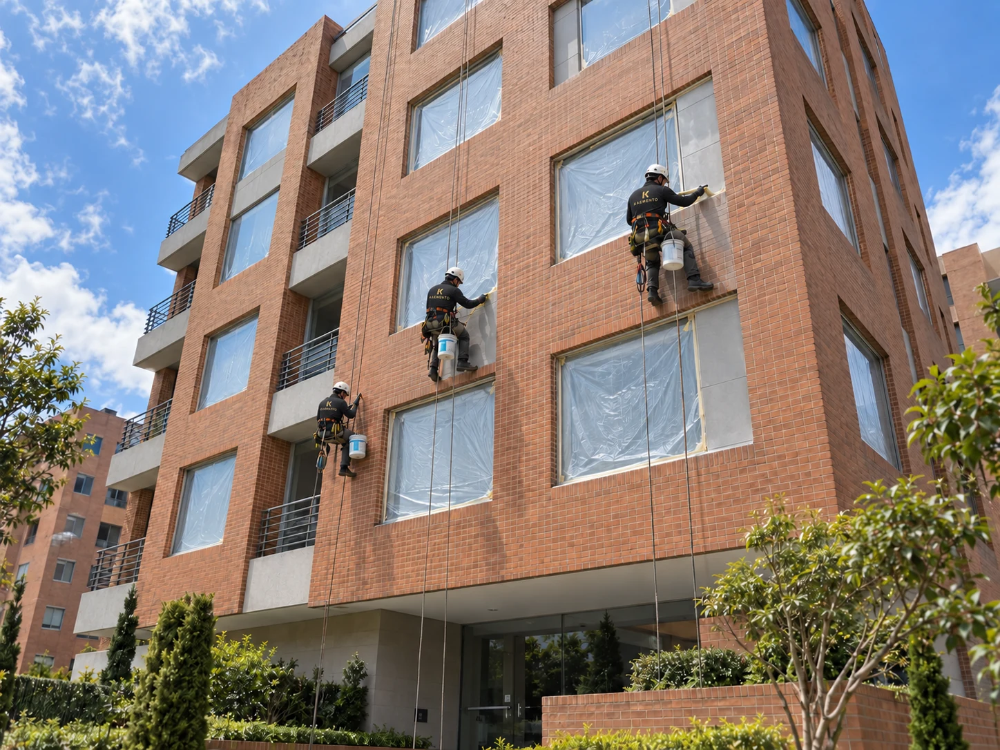
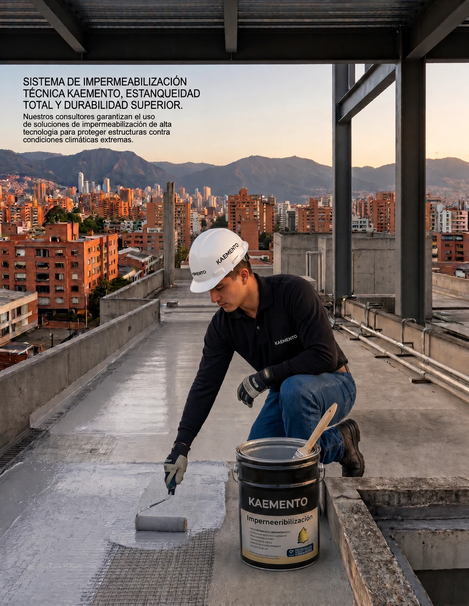

Diagnóstico
Ubicamos rutas de ingreso de agua.
ENVOLVENTE Y PROTECCIÓN
Soluciones para recuperar, sellar y proteger superficies expuestas a humedad, lluvia e intemperie.

ALCANCE DEL SERVICIO
Combinamos limpieza, reparación, resanes, tratamiento de juntas y protección superficial. Para cubiertas y terrazas, la intervención parte de identificar el origen de las filtraciones.
Ubicamos rutas de ingreso de agua.
Limpiamos y reparamos el soporte.
Aplicamos el sistema especificado.
Verificamos continuidad y acabado.
MANTENIMIENTO DE FACHADAS
Intervenimos superficies, juntas y encuentros para recuperar la fachada y atender los puntos expuestos al agua.

Atención a uniones y puntos críticos desde una plataforma de trabajo en altura.

Intervención de paños de fachada con protección de la ventanería y cuidado del entorno.
Visualizaciones conceptuales de las tareas de mantenimiento. El alcance se define mediante diagnóstico del inmueble.

CUBIERTAS, TERRAZAS Y JARDINERAS
Identificamos la causa de las filtraciones, tratamos grietas y puntos críticos, y definimos un sistema de impermeabilización compatible con el soporte.
El catálogo de Servicios integra la recuperación de fachadas con Façade Protect y la protección de cubiertas y jardineras con Roof & Planter System. La solución se selecciona según las condiciones de cada intervención.
INFORMACIÓN CLAVE
Antes de intervenir, identificamos condiciones, causas y restricciones.
Organizamos frentes de trabajo, controles y entregables.
Atendemos proyectos desde Bogotá en diferentes regiones del país.
La solución final se especifica después de revisar las condiciones reales del proyecto. Los tiempos, materiales y frentes de trabajo se coordinan para proteger la calidad y la operación del espacio.
PREGUNTAS FRECUENTES
Con una revisión de la necesidad, el soporte, el uso del espacio y las restricciones operativas. A partir de allí se define alcance, sistema y programación.
Sí. Según el proyecto podemos integrar diagnóstico, productos, mano de obra, supervisión y entrega técnica.
Sí. KAEMENTO tiene cobertura a nivel nacional y evalúa cada proyecto según ubicación, alcance y condiciones de ejecución.
KAEMENTO EN MOVIMIENTO
Secuencias ilustrativas del proceso. La intervención se define según el diagnóstico y las condiciones de cada superficie.
Reparación y regularización del soporte antes de continuar con el sistema.
Trabajo sobre las juntas, aplicación y acabado de la superficie.
Edición visual sin audio · Imágenes generadas con IA, no registro de una obra ejecutada.
ASESORÍA KAEMENTO